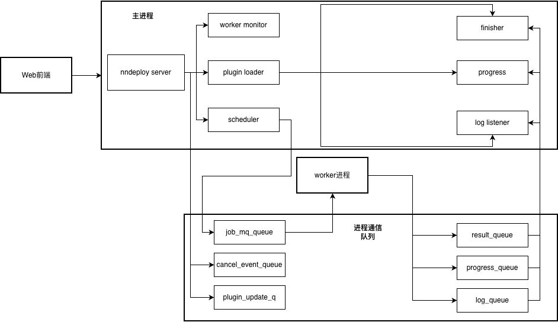

nndeploy后端架构与实现文档¶
项目概览¶
nndeploy的后端基于 FastAPI 实现，向前端提供 RESTful API 与 WebSocket 实时通知，承担资源下载/管理、任务调度、任务执行以及消息推送等职责。
后端采用server进程结合worker进程的以及多线程调度的异步架构，保证HTTP服务的高并发响应能力，同时隔离nndeploy底层DAG的计算任务执行。核心功能主要包括：前端资源下载、工作流模版下载、文件资源（模型/图片/视频/音频/文档…）管理、模型下载、工作流保存/更新/持久化、任务提交/执行/中断、实时进度/日志推送等。
总体架构¶
架构图¶

其中：
FastAPI主进程：负责接收启动参数，创建server与woker之间的通信队列以及消息传递，创建worker的守护进程（当工作流执行失败后重启），启动worker和server进程
Server：由聚合的业务逻辑组成，实现工作流保存、任务提交/执行、资源下载、任务队列管理等功能
Worker：独立的工作流执行进程，用于异步调用GraphExecutor执行图任务并反馈结果和执行状态
模块划分¶
后端各个模块的功能如下：
server/
├── app.py # FastAPI启动、进程通信、日志配置
├── server.py # NnDeployServer，注册API、WebSocket、实现交互逻辑
├── task_queue.py # 线程安全的任务优先级队列与task生命周期管理
├── worker.py # Worker子进程主体，调用底层框架执行图并回传结果
├── executor.py # GraphExecutor，封装 nndeploy GraphRunner 调用
├── db.py # SQLite 访问层，持久化工作流与模板
├── template.py # 模板资源拉取、版本解析、分类
├── frontend.py # 前端资源拉取、版本解析、分类
├── files.py # 资源文件上传、遍历、删除 API
├── schemas.py # Pydantic 请求/响应模型
├── log_broadcast.py # 日志广播 Handler，推送到 WebSocket
├── logging_taskid.py # 任务上下文日志标记、IO 重定向
├── download_progress_handler.py # 模型下载日志解析与进度汇报
└── utils.py 等 # URL 解析、输出路径处理等工具
关键实现细节¶
应用入口¶
app.py解析命令行参数（监听地址、端口、资源目录、日志文件、插件路径等），建立多种multiprocessing.Queue，并创建NnDeployServer实例。入口脚本启动调度线程（
start_scheduler）、完成线程（start_finisher）与进度监听线程（start_progress_listener），再拉起独立worker进程以及monitor线程，使用uvicorn.run启动 ASGI 服务。日志通过
QueueListener汇聚到主进程，同时附加LogBroadcaster以便实时向前端推送任务日志。
资源管理¶
后端采用 CLI + 环境变量的轻量配置方式：
--resources指定资源根目录、--json_file支持启动时批量导入 workflow JSON，--plugin将外部插件复制到资源目录并自动加载。NnDeployServer在初始化时基于传入参数生成工作流、模板、静态资源等目录，确保运行必需的子目录存在，并保存 CLI 参数以供后续依赖函数（如get_workdir）使用。
路由与依赖注入¶
所有 REST 接口统一挂载在
/api前缀下，涵盖任务排队、取消、队列状态、工作流 CRUD、模板列表、资源下载等功能，并通过 Pydantic 模型校验请求与响应结构。文件服务路由独立于
files.py，利用 FastAPI 依赖注入获取工作目录，实现递归资源树遍历、文件上传及删除等操作，响应体包含稳定的 UUID 节点标识，方便前端构建目录树。WebSocket 端点
/ws/progress支持客户端按需绑定任务 ID，服务端维护任务与连接的双向映射，在任务进度、完成与系统事件到来时消息推送。
数据持久化¶
SQLite 数据库通过
DB类封装，启动时自动初始化workflows与templates两张表，并提供工作流插入、更新、删除、按路径查找等接口。工作流保存接口根据业务传入的
businessContent选择更新或新建 JSON 文件，同时写入封面与需求描述等元数据，确保持久化文件与数据库记录同步。模板管理器在启动时拉取预置模板仓库，解析版本约束并注入数据库，API 可按目录枚举模板或根据 ID 读取实际文件内容。
异步任务¶
TaskQueue以最小堆实现优先级调度，并记录任务从提交、派发、运行到结束的完整生命周期与时间戳，同时维护有限大小的历史缓存供查询。Worker 子进程通过
GraphExecutor调用 nndeploy 原生GraphRunner执行图任务，周期性查询运行状态，将进度、完成事件写入progress_q，并在结束后推送执行结果与时间剖面。取消与插件热更新通过额外的队列传递：主进程向
cancel_event_q注入任务 ID，worker 轮询后调用GraphExecutor.interrupt_running；插件文件更新则在 worker 端动态导入，无需重启服务。
相关技术与知识点¶
异步编程模型¶
FastAPI 基于 ASGI 协议运行在
uvicorn上，HTTP 处理与 WebSocket 广播依赖事件循环；当后台线程需向前端推送消息时，使用asyncio.run_coroutine_threadsafe回到主循环，确保线程安全。
数据验证与序列化¶
所有请求与响应通过 Pydantic 模型声明，FastAPI 自动校验字段并生成 OpenAPI 文档，保证接口类型安全；例如
EnqueueRequest、WorkFlowSaveResponse、FileListResponse等模型覆盖主要业务场景。
错误与异常处理¶
各路由大量使用
HTTPException返回统一的错误状态码与说明，如下载接口对不存在文件或不支持的 MIME 类型返回 404/400，工作流保存针对非法输入抛出 400/500，主线程日志亦会捕获异常并记录，便于定位问题。
日志与监控¶
主进程集中处理所有日志，除了写入控制台与滚动文件，通过
LogBroadcaster将带任务 ID 的日志推送给绑定的 WebSocket 客户端；worker 进程通过上下文变量在日志前自动添加[task_id=...]前缀，实现任务级别追踪。DownloadProgressHandler解析模型下载日志，提取进度百分比、已下载字节等信息，借助事件循环回调实时反馈给前端，便于监控长耗时操作。
WebSocket通信¶
/ws/progress负责推送任务进度、执行结果、系统事件和下载进度，服务器通过task_ws_map管理任务与连接关系，广播时仅向订阅者发送。日志广播、下载进度等其他事件也复用该连接，构成统一的实时通信通道，前端在接收到不同
type的消息后可根据类型分别渲染图运行信息、内存输出或下载状态等内容。
总结¶
项目通过模块化设计将 HTTP 接口、队列调度、执行引擎与持久化解耦，便于分别扩展与维护。
依托 FastAPI 的异步能力、Pydantic 的类型约束以及多进程执行隔离。
增加了对回传Graph json的解析功能，可以读取Graph中的参数，实现模型资源的自动下载。